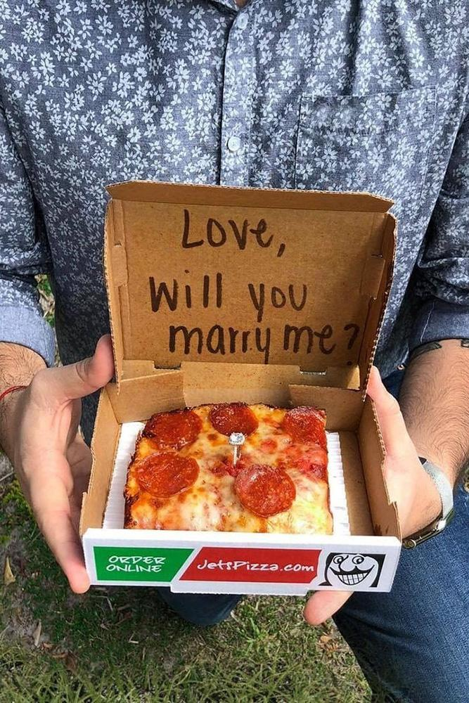

This is where I come to rant about any and everything, stay tuned for frequent postings!
Over the years I've noticed that one of the most common ice-breaker or "get to know you" questions is something along the lines of "What was your first job?" or "What was the first thing you were ever hired for?" But I've always struggled to answer this question, because truthfully I WAS hired by a professional moving company the summer after I turned 18, but they never contacted me with my schedule or reached out to coordinate a job. I had gone in for an interview, negotiated a salary, got officially hired, the whole 9 yards! The only call I ever recieved from them came from a gruffy-sounding man who asked why I wasn't at his job site; once I told him that I never recieved any information about the job, he just laughed and hung up the phone, and then I never heard from anyone at the company again. Now looking back, I'm thankful that the job ended up not working out, because I ended up working for the online grocery delivery company "Shipt" and found it much more manageable to work on my own time and not have a direct superior always hounding me to make sure I was on task or doing things their preferred way. I worked for shipt for a little over a year until other food delivery services began to crop up, and I made the switch to DoorDash due to their higher promos and quicker delivery times.
Here's a table showing my first three jobs, what year I started working, and how much I enjoyed them
| Job | Year | Rating |
|---|---|---|
| Shipt | 2018 | 6/10 |
| DoorDash | 2019 | 8/10 |
| Jet's Pizza Delivery Driver | 2020 | 9/10 |
Enjoy this picture of me years ago when I first started working at Shipt!
Published on by Zachary Harless
After I had distanced myself from the online delivery game, I decided to finally get a job at a real brick and mortar store in order to have a "real" first job experience and not just an app gig that didn't necessarily keep me motivated. Although I said I distanced myself, I really only took a baby step, because I ended up taking a job as a pizza delivery guy for Jet's Pizza. This job ended up opening my eyes in a lot of different ways, and I'll always value the perspective that the job gave me and the experience of interacting with people who came from all different walks of life, but I definetly encounted my fair share of assholes as well, and I'm about to tell you about one right now!! One night I was making a delivery to a nearby apartment complex which was notorious for hard-to-read address plates and poor lighting, but when I finally managed to locate the right apartment door and ring the buzzer - nobody answered. So I waited a couple minutes and tried again, and again, then I called their phone - still nothing. I was just about to give up and head back to the store when I see a door fly open on the upper level and a guy started to race down the stairs. When he finally made it to the bottom he ripped open the complex door and began apologizing profusely, he told me that I had rang the buzzer while he was in the middle of proposing to his girlfriend and "I just had to wait." I congratulated him because I didn't know what else to say, and then he took his pizza, signed the receipt, and walked back in. I was still dumbfounded by what had just happened so when I looked down and saw that he wrote a fat 0 in the tip line, I wasn't even suprised. I just chalked it up to the law of averages, and knew that his would be one of the 50% of marriages to fail. (Too harsh? Sorry!)
Here's a picture of what his girlfriend probably saw!

Published on by Zachary Harless